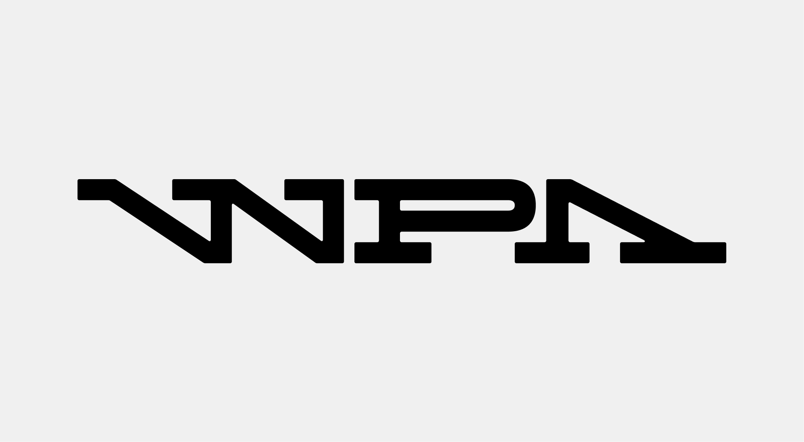
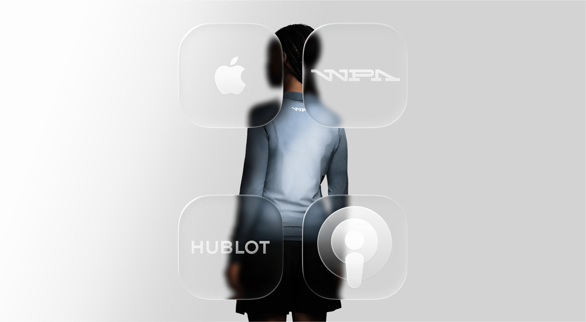
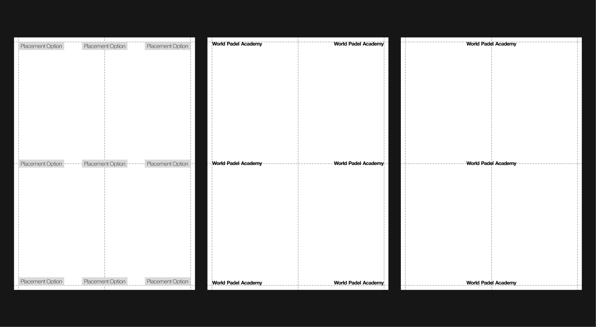
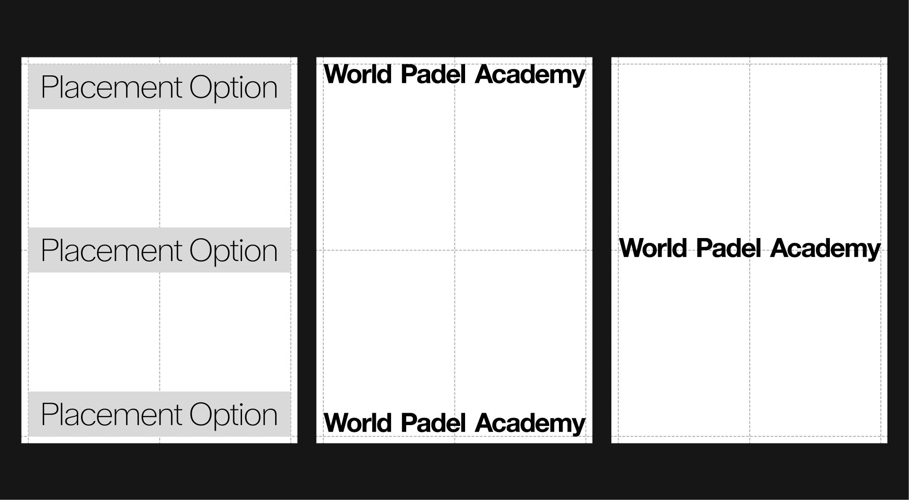
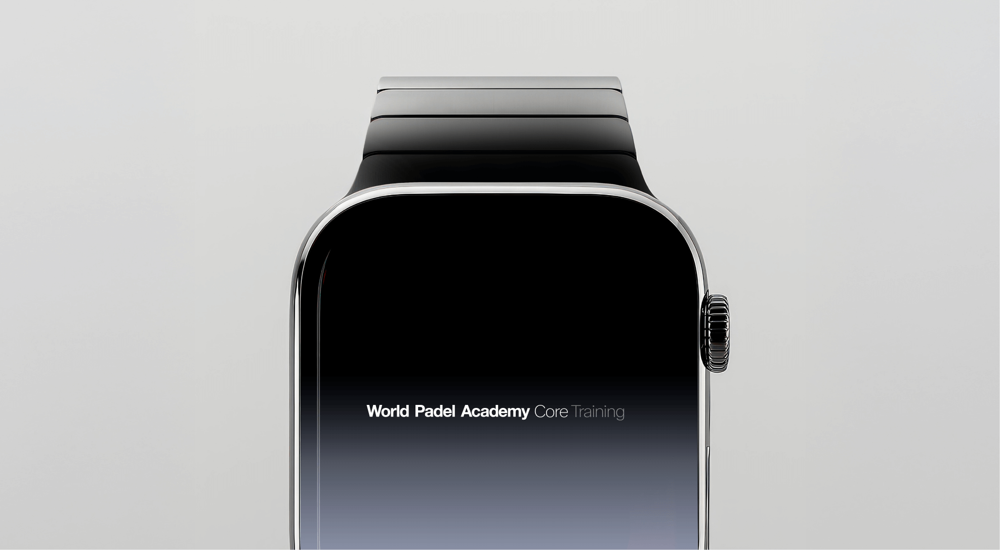
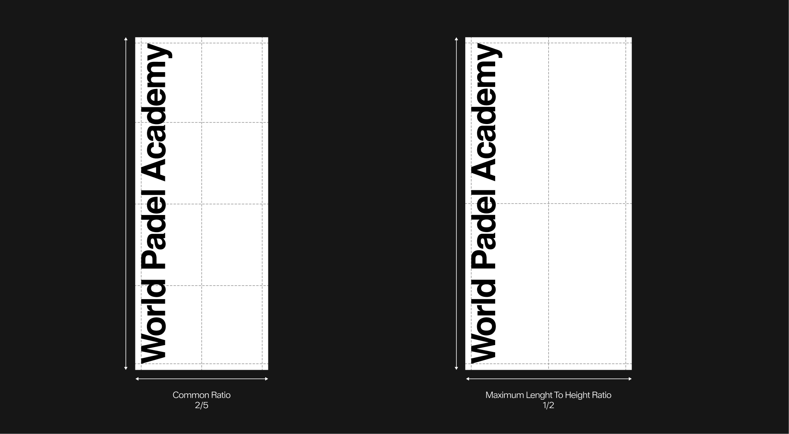
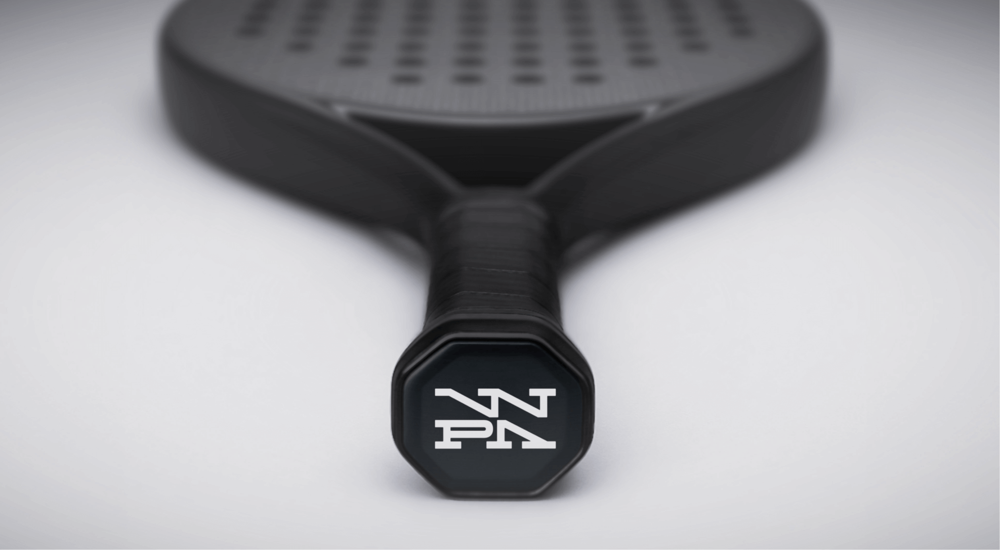
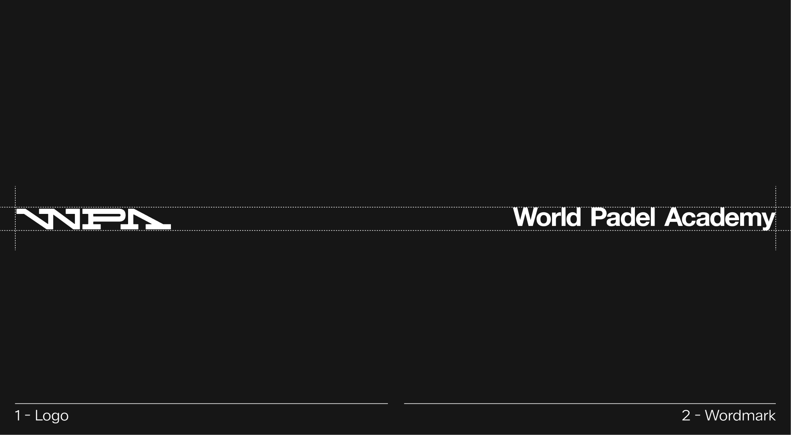
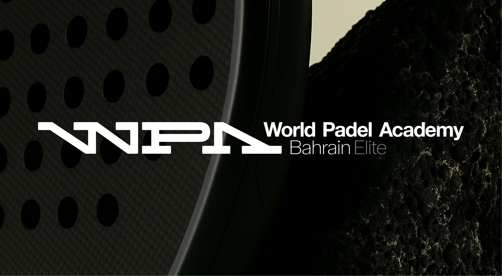
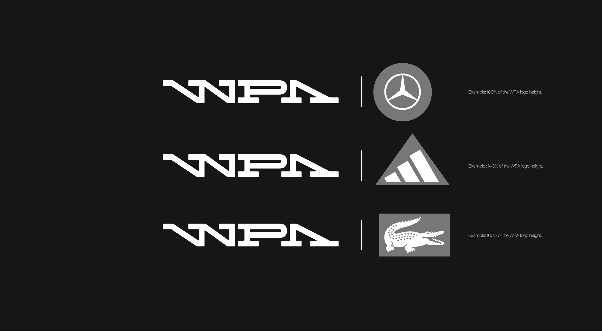

Logos
The WPA logo is the cornerstone of our visual identity. It represents our history, our ambition, and our role as the home of padel — both in the UAE and worldwide. These guidelines define how the logo should appear in every context, ensuring it remains clear, consistent, and instantly recognizable.
From display logos to wordmarks and partner lock-ups, this section provides the rules and best practices that protect the integrity of the WPA brand. Use these standards to keep every application precise, professional, and unmistakably WPA.
2.1. Display Logo
Standard
The WPA wordmark is an ode to the original Mécane logo, carrying forward its legacy while adopting a more contemporary and dynamic structure. The sharpness of the letterforms preserves the brand’s precision and authority, while the subtle rounded details on the serifs introduce a layer of sensitivity—reflecting the Academy's nurturing role and positioning WPA as a leader in sport.
Clearspace Guidelines
When applying the WPA display logo, it is paramount that it retains clarity and presence. To achieve this, the logo must always be surrounded by sufficient clear space, free from any competing elements. This protective area ensures legibility and consistency across applications. The minimum clear space is defined as 50% of the logo’s height, adapting proportionally as the mark scales. Exceptions may apply in specific lock-up configurations.


Clearspace Web & Tablet
On web and tablet applications, the logo must maintain a minimum clear space of 31px above and below. This spacing should always align with the page margins and may be adjusted as needed to follow web and mobile design requirements.

Logo Orientation
Horizontal (Standard) This is the primary and preferred logo orientation. Always use this version whenever possible. Vertical (Not Allowed) Do not rotate or tilt the logo vertically. The mark must always maintain its horizontal orientation to ensure consistency and readability.
Scalability
The WPA logo has been designed to remain clear and legible at a wide range of sizes. The minimum height for the logo is 10px. Never use it smaller than this. Setting this minimum size ensures the logo’s visibility and integrity are always preserved.
Color Options
The WPA logo must appear exclusively in black, white, or approved core palette colors. When applied to imagery, the background should never compromise clarity.Always maintain strong contrast to protect the legibility of the logo.
Logo Misuse
The WPA logo has been designed with specific uses in mind, and its appearance must remain consistent at all times. It must not be altered, distorted, or decorated in any way. To preserve clarity and legibility, always follow the established guidelines. Below are common mistakes to avoid.
Logo
Placement
To ensure consistency and clarity, partnership lockups must always adhere to the approved placement options. The WPA logo should remain aligned within the grid system to maintain a balanced relationship with the overall layout. A minimum clear space equal to 50% of the logo’s height must be maintained around the lockup, with additional spacing allowed whenever possible to maximize visibility.
Wordmark Placement
Photography
In certain applications, the logo may be placed directly over photography. To maintain consistency and legibility, it should always be positioned in controlled locations. Either centered within the image or anchored to the bottom corner.
Logo
Clarity
Logo color adjusts to its background. Apply black on light backgrounds, and white on dark backgrounds.
Application Example
2.2. Wordmark Logo
Standard
The WPA wordmark is an ode to the original Mécane logo, carrying forward its legacy while adopting a more contemporary and dynamic structure. The sharpness of the letterforms preserves the brand’s precision and authority, while the subtle rounded details on the serifs introduce a layer of sensitivity—reflecting the Academy's nurturing role and positioning WPA as a leader in sport.
Clearspace Guidelines
When using the World Padel Academy wordmark, always ensure it remains clear and prominent. To protect its legibility, the logo must be surrounded by clear space, free of any other elements. This space should be at least equal to the full height of the logo and scale proportionally. Exceptions are allowed only in specific lock-up configurations.
Clearspace Example


Clearspace Web & Tablet
On web and tablet applications, the logo must maintain a minimum clear space of 31px above and below. This spacing should always align with the page margins and may be adjusted as needed to follow web and mobile design requirements.
Wordmark Orientation
The World Padel Academy Wordmark must always be used in its horizontal orientation. This is the primary and only approved version, as it ensures maximum clarity and legibility.
The logo should never be rotated. Whether upward or downward—as this compromises readability and weakens the integrity of the wordmark.
Scalability
The World Padel Academy Wordmark has been designed to remain clear and legible at a wide range of sizes. The minimum height for the logo is 15px. Never use it smaller than this. Setting this minimum size ensures the logo's visibility and integrity are always preserved.
Color Options
The World Padel Academy wordmark may only be used in black, white, or approved core palette colors. When placed on an image, always ensure there is enough contrast so the logo stays clear and easy to read.
Wordmark Misuse
The WPA logo has been designed with specific uses in mind, and its appearance must remain consistent at all times. It must not be altered, distorted, or decorated in any way. To preserve clarity and legibility, always follow the established guidelines. Below are common mistakes to avoid.
 Do not apply patterns or decorative effects to the wordmak
Do not apply patterns or decorative effects to the wordmak
Wordmark
Placement
To ensure consistency and clarity, partnership lockups must always adhere to the approved placement options. The WPA logo should remain aligned within the grid system to maintain a balanced relationship with the overall layout. A minimum clear space equal to 100% of the wordmark's height must be maintained around the lockup, with additional spacing allowed whenever possible to maximize visibility.
Wordmark
Placement - Special Feature
The WPA logo may also be scaled to occupy the entirety of the format, provided that the defined margins are always respected. This usage emphasizes the brand's presence in a bold and impactful way, while ensuring balance and consistency within the layout.
Logo
Clarity
Logo color adjusts to its background. Apply black on light backgrounds, and white on dark backgrounds.
Application Examples
Clarity
2.3 Vertical Wordmark
Wordmark Orientation
The World Padel Academy wordmark must always be used in its horizontal orientation. This is the primary and only approved version, as it ensures maximum clarity and legibility.
The logo may be rotated, but never downward, as this compromises readability and weakens the strength of the wordmark, thereby diminishing the brand's image.
Usage
The vertical wordmark should be reserved for narrow or tall formats where the horizontal version would not fit comfortably. It can be applied to layouts with an aspect ratio of maximum 1:2, ensuring readability and visual balance.
For best results, maintain clear margins and avoid excessive compression or stretching that could affect legibility.
Incorrect Usage
Do Not Use on Wide or Square Formats. The vertical wordmark should never be applied to wide or square layouts (e.g., 5/7 or 1/1 ratios).
Using it in these proportions reduces readability and disrupts visual harmony. Always reserve the vertical version for narrow formats only.
Clearspace
For most formats where the vertical wordmark is used, the clear space remains consistent with the original: 100% of the wordmark's height on the vertical axis.
Application Rules
The vertical wordmark can be applied in two main ways, depending on the layout and available space. In most cases, it should align with the margins and respect its clear space rules.
Alternatively, it may extend to fill the full height of the format, as long as legibility and proportions are preserved.
Placement Options
To ensure visual consistency and structural balance, the vertical wordmark must always follow one of the approved placement options shown below.
It should align precisely within the established grid system to maintain harmony with the overall layout. A minimum clear space equal to 100% of the wordmark's height must always surround the mark, ensuring legibility and presence across all applications.
When respecting the defined margins, the vertical wordmark may extend to fill the entire height of the format. It can be positioned either on the left or right side, depending on the layout composition and balance. This flexibility ensures a consistent and harmonious integration across all vertical applications.
Placement Example
Layout Integration
The format accommodating the vertical wordmark can coexist with text or imagery, as shown in the examples below. When combining elements, maintain clarity and balance. The wordmark should remain legible and unobstructed within its clear space. Always apply the principle of “less is more”: prioritize simplicity, generous spacing, and visual hierarchy to preserve the refined character of the identity.
Misuse
Avoid the following common mistakes to ensure correct use of the vertical wordmark.
2.4. Condensed Logo
Standard
The condensed WPA logo uses the same letterforms and shapes as the updated WPA logo but is arranged in two lines, used only for condensed formats.
Clearspace
When using the condensed WPA logo, always ensure it remains clear and prominent. To protect its legibility, the logo must be surrounded by clear space, free from any other visual elements. This space should be at least equal to half the height of the WPA logo. Exceptions are allowed only in specific lock-up configuration
Clearspace Examples
Orientation
The condensed WPA logo must always be used in its standard orientation. This is the primary and only approved version, as it ensures maximum clarity and legibility.
The logo should never be rotated—either upward or downward—as this compromises readability and weakens the integrity of the wordmark.
Scalability
The condensed WPA logo has been designed to remain clear and legible across a wide range of sizes. The minimum height for the logo is 15 px. It should never be used smaller than this. Establishing this minimum size helps ensure the logo's visibility and integrity are consistently maintained.
Color Options
The condensed WPA logo may only be used in black, white, or approved core palette colors. When placed on an image, always ensure there is enough contrast so the logo stays clear and easy to read.
 Black on color
Black on color
Misuse
The condensed WPA logo has been designed for specific applications, and its appearance must remain consistent at all times. It must not be altered, distorted, or decorated in any way. To preserve clarity and legibility, always adhere to the established guidelines. Below are common mistakes to avoid.
 Do not add shadows or 3D effects to the wordmak.
Do not add shadows or 3D effects to the wordmak.
Format Options
The condensed WPA logo can be used in two distinct ways: as a standalone monogram in limited spaces, or as a logo within a vertical banner occupying the full width. In both cases, its use is intended for layouts with restricted space and should be reserved for these specific situations.
The condensed WPA logo was specifically designed to ensure legibility in narrow formats. It may therefore be used in vertical layouts where it spans the full available width. In such cases, the wordmark appears within formats that combine additional graphic elements such as text or imagery. The container holding the wordmark has a defined minimum height but may be extended vertically, provided it follows the guidelines and grid systems outlined in this document.

Format Misuse
The condensed WPA logo was specifically designed to ensure legibility in narrow formats. It may therefore be used in vertical layouts where it spans the full available width. The container holding the wordmark has a defined minimum height but may be extended vertically, provided it follows the guidelines and grid systems outlined in this document.
Placement
To ensure consistency and clarity, condensed logo lockups must always follow the approved placement options. The condensed WPA logo should remain aligned to the grid system to preserve a balanced relationship within the overall layout.
Placement examples
Photography Placement
In certain applications, the condensed logo may be placed directly over photography. To maintain consistency and legibility, it should always be positioned within controlled areas.
Application Example
2.5 Logo Architecture
Brand Architecture
The WPA logo has been designed to adapt across multiple brand categories. To maintain clarity and distinction, each lock-up follows specific rules that create variation while preserving consistency within the system. The main categories are shown below.
Global Architecture
The WPA logo system allows for two possible configurations to ensure flexibility and consistency across applications.
Horizontal Configuration: The primary version, where the wordmark extends to the right of the symbol, providing a clear and balanced composition.
Stacked Configuration: An alternative version, where the wordmark sits below the symbol. This configuration uses negative space to create a compact and harmonious block, ensuring legibility and visual balance.

Clearspace
When using the WPA Global Architecture lock-ups, always ensure they remain clear and visible. To achieve this, each lock-up must be surrounded by clear space equal to 100% of the height of the World Padel Academy wordmark.
Partnerships
The use of opacity adds another layer of hierarchy. Alternating between 100% and 50% opacity makes the separation between categories immediately visible.
Partnerships Misuse
should always be displayed at a ratio proportional to the WPA logo, ensuring neither dominates the composition.
The WPA logo sets the reference size.
The partner logo must be scaled proportionally to align visually with the WPA wordmark height or width (depending on orientation).
Never reduce the partner logo to a superscript, subscript, or any “exponent-style” placement that compromises hierarchy and clarity. Both logos must appear aligned and anchored on a shared baseline or vertical axis to preserve balance.
Partnerships Placement
To ensure consistency and clarity, partnership lockups must always follow the approved placement options. The WPA logo and partner logo should remain aligned and anchored within the grid system, creating a balanced relationship with the overall layout.
Additional Architecture
A third architectural application is possible depending on the format. This variation applies in a horizontal format, with a busy background, without any other text present on the layout.

This system places the WPA wordmark on the right and the WPA logo on the left, centered within the layout.
To ensure visual consistency, the logo and wordmark should appear the same size. Therefore, the WPA logo's scale should be based on the wordmark and adjusted to 90% of its height to achieve optimal optical balance.
Additional Architecture Misuse
The additional architecture layout must always follow the established structure to maintain consistency across all applications. It should not be modified, rearranged, or combined with other elements in unintended ways. Below are examples of common misuses to avoid.
Application Example
When working with images that contain multiple levels of contrast, always base the application of icons on the dominant brightness of the composition. If the overall background is too dark and risks reducing visibility, apply a subtle white layer at 10% opacity on top. This adjustment ensures that the image remains lighter, creating enough clarity for icons and text.
2.6. Logo Lock-Ups
Overview
The WPA logo system follows a clear hierarchy to express both its global presence and its local adaptability.
Location - The location name always comes first and appears at 100% of the wordmark size, highlighting WPA's global reach and consistency.
Sub-Category : Secondary descriptors (such as level, program, or division) follow the location and appear at 50% of the wordmark size. This ensures a clear hierarchy while keeping the overall lock-up harmonious and balanced.
Sub-Categories
The use of opacity adds another layer of hierarchy. Alternating between 100% and 50% opacity makes the separation between categories immediately visible.
General Rules
The main lock-up represents the primary association between the WPA logo and partner brands. It establishes a clear and balanced visual relationship, ensuring both identities maintain their integrity while forming a unified expression of collaboration. This configuration serves as the reference model for all other lock-up variations.
General Rules - Construction
When the partner lock-up consists of a wordmark, the composition must follow the proportional and spacing rules shown here. The WPA logo should always remain the leading element, while the partner wordmark is adjusted in length and height to maintain visual harmony and balance between both identities.
General Examples
Divider Use
In certain compositions, a thin divider line may be placed between the WPA logo and the partner logo. This element helps define a clear separation while maintaining visual balance and consistency across lock-ups. The divider should always remain subtle and proportional to the overall height of the logos.
Construction
The lock-up is built on a consistent grid system ensuring alignment, spacing, and proportional balance between the WPA logo and partner logos. A clear space equal to 100% of the WPA logo height must separate the two elements. A vertical separator may be used to define the relationship, with a height matching the partner logo and a thickness of 2% of the WPA logo height. The partner logo height should range between 140% and 160% of the WPA logo height, depending on its visual weight.
Partnerships Logo proportions
The height of partner logos should be adjusted between 140% and 160% of the WPA logo height, depending on their visual weight and shape. This ensures consistent optical balance and harmony across all lockup
Horizontal clear space
A minimum clear space equivalent to 100% of the WPA logo height must be maintained between the WPA logo and any partner logo. This spacing ensures visual balance and clarity across all horizontal lockups.
Vertical clear space
A minimum clear space equivalent to 100% of the WPA logo height must be maintained between logo rows. This ensures proper breathing space and visual consistency when multiple lockups are arranged in a vertical grid.
Logo Alignment
When multiple partner logos are displayed together, the WPA logo must always be visually centered within the sequence. Regardless of whether the total number of logos is even or odd. This ensures a balanced and cohesive brand architecture across all applications.
Partnerships Lockups : Misuses
Below are examples of incorrect lock-up usages to avoid.
 Do rotate the WPA logo or the partner logo.
Do rotate the WPA logo or the partner logo.
Wordmark Lockups
The WPA wordmark may be paired with partner wordmarks when relevant. In certain compositions, it can also be included in lockups to maintain visual harmony.
Construction
The lock-up is built on a proportional grid to ensure visual consistency between the WPA wordmark and partner wordmarks. A minimum clear space of 150% of the WPA wordmark height must be maintained between the two elements to preserve legibility and balance within the composition.
Proportions
If the partner wordmark has a similar visual weight or length to the WPA wordmark, it can be aligned to the same height to ensure harmony and consistency within the lock-up.
However, if a partner wordmark is visually more compact, it may be increased in height by up to 20% to achieve better visual balance.
Partnerships Lockups : Examples
Preferred lock-up usage
In most cases, the WPA logo should be used in lock-up with partner logos rather than the wordmark. This approach ensures stronger brand recognition and a more balanced visual relationship between WPA and its partners.

Partnerships Lockups : Misuses
Below are examples of incorrect lock-up usages to avoid.